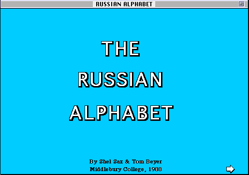
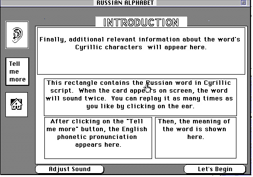
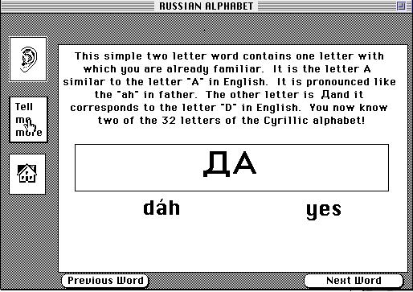

Page index / publications
The Russian Alphabet

The full stack contains approximately thirty five words, each with one more letter to learn and an example of the word pronounced in Russian. You can obtain a copy of this HYPERCARD Stack for Macintosh by clicking here.

